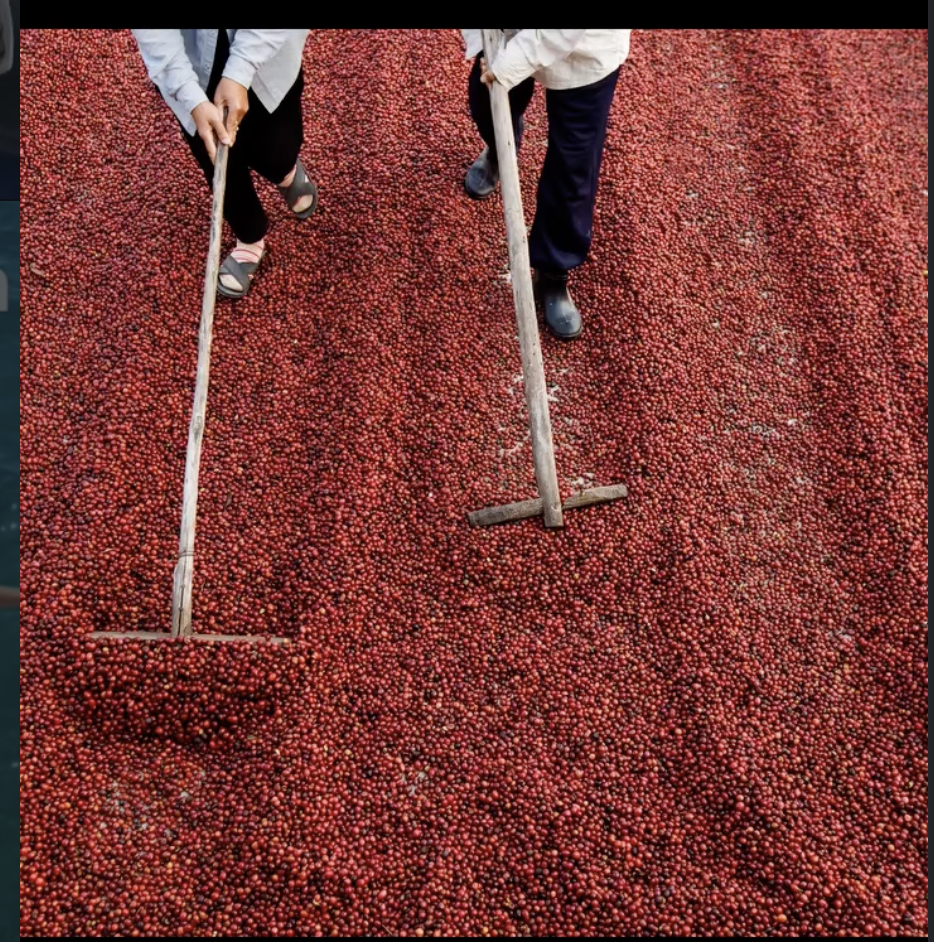
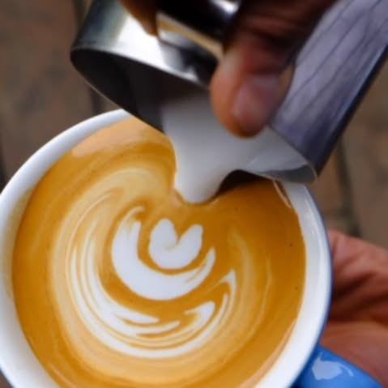

01
The Harvest
At elevations above 1,200 meters in the Cordillera Central, our farmers walk the steep mountain slopes each morning. They select only the deepest red cherries — each one picked by hand to ensure only the ripest fruit makes it to processing. This selective harvest is what gives Manabao its clean, complex flavor profile.

After harvest, the cherries are spread across raised drying beds under the Caribbean sun. Workers turn them by hand throughout the day, ensuring even drying over two to three weeks. This slow, natural process develops the sweetness and depth that defines our coffee.
Each micro-lot is processed separately, preserving the unique character of its specific mountainside origin.

Each batch is roasted in small quantities to bring out the volcanic terroir of the Dominican highlands. Our roast profiles are developed over months of cupping — calibrated to reveal dark chocolate, toasted walnut, and brown sugar without masking the bean's natural complexity.

From mountain slope to morning ritual — four steps, one origin, no shortcuts. This is coffee the way it was meant to be.
Dominican Origin